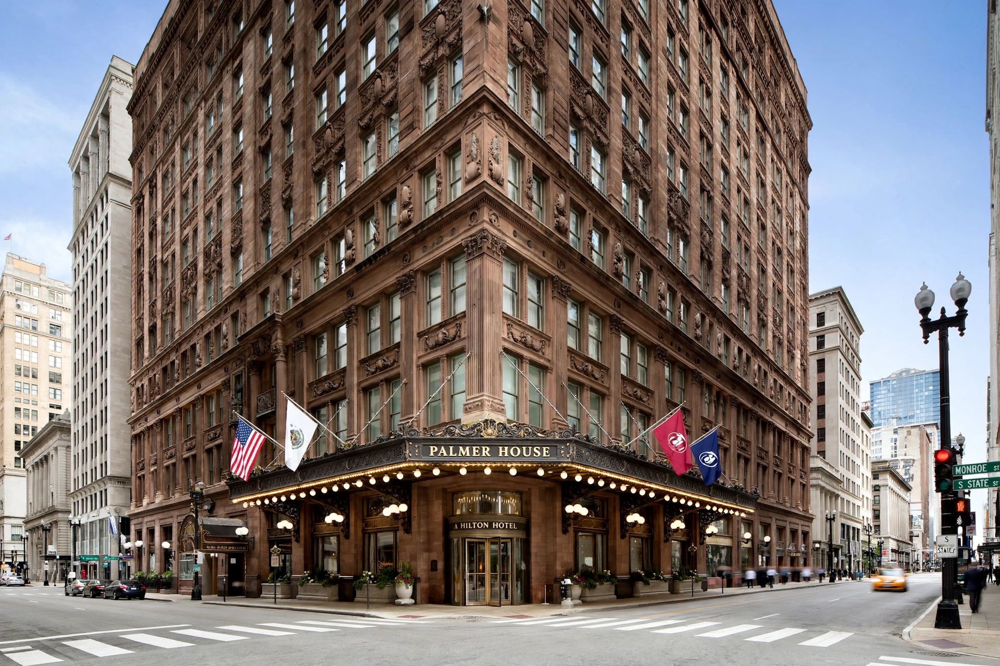

The Palmer House, currently operating as Palmer House, a Hilton Hotel, is a historic luxury hotel in the Loop area of downtown Chicago, Illinois. Opened in 1871 and rebuilt several times, it is one of the oldest continuously operating hotels in the United States and a Chicago Landmark.

Businessman Potter Palmer built the original Palmer House as a wedding gift for his wife Bertha. It opened on 26 September 1871, but burned down just 13 days later in the Great Chicago Fire. Palmer rebuilt a grander hotel across the street, opened in 1873, billed as fireproof. A third building, designed by Holabird & Roche in 1925–27, replaced it on the same site. Conrad Hilton acquired the hotel in 1945.
The hotel is famed for its opulent lobby with a French Baroque ceiling painted under the direction of Louis Comfort Tiffany-era artisans, its Empire Ballroom, and for being the birthplace — in its kitchen — of the chocolate brownie, created in 1893 at Bertha Palmer's request for the World's Columbian Exposition. Famous guests have included U.S. presidents, Charles Dickens, Oscar Wilde and Mark Twain.
A major renovation completed in 2009 restored historic features at a cost of about $170 million. The hotel was added to the National Register of Historic Places as part of its historic status.
See also: Great Chicago Fire, Hilton